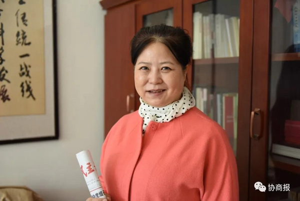

《民主协商报》：张萍委员：用实际行动践行委员责任
2021-03-16 03:58
民主协商报 21-03-03

积极投身疫情防控和脱贫攻坚；为嘉峪关市政协和兰州市委统战部宣讲全国两会精神；立足专业优势，在全国层面为甘肃高质量发展鼓与呼……这是过去一年，住甘全国政协委员、立信会计师事务所甘肃分所所长张萍的履职日程。
2020年初，新冠肺炎疫情暴发。除夕前一天，得知消息的张萍委员立刻号召事务所员工捐款捐物，并将当天筹集的2万元和1000个口罩捐向武汉。大年初七开始，张萍委员又通过甘肃省知联会、新联会微信群发起倡议，群内成员纷纷响应，随后筹集到20万元善款，购买了酒精、口罩、防护服等物资，捐赠给我省防控一线的医院。
作为临洮县审计局的挂职副局长，2020年，张萍委员践行着政协委员和新阶层代表人士的社会责任，通过为临洮县上营乡各农村专业合作社提供财务咨询、捐赠办公家具和车辆，邀请中央统战部新阶层代表人士培训班成员和财政部注册会计师协会服务团为临洮县、积石山县进行捐助活动等方式，积极为脱贫攻坚工作献智出力。
而作为省注会协会、资产评估协会副会长，张萍委员也积极发挥专业优势，为兰州市轨道交通公司等企业进行审计咨询；并积极倡议“组建法、财、税的专业服务团，服务我省经济高质量发展”，该倡议也得到了省委统战部、省财政厅的认可。
作为全国政协委员，张萍的履职工作亮点频出。去年的全国两会上，她提交的《关于打造“陇中河套平原”融入黄河治理命运共同体的提案》，得到了水利部、自然资源部的回复，提案中许多建议都被水利部列入“十四五”规划当中。
尤其让张萍委员感到荣幸和鼓舞的是，她在全国政协十二届二次会议上提交的《关于企业扶贫支出在所得税税前扣除的提案》，被评为全国政协2019年度好提案。“这是对我作为一名政协委员的最大肯定，省政协主席欧阳坚还对此作出了批示，让我深受鼓舞，同时也激励我在今后的履职过程中更好发挥专业优势，为经济社会发展贡献自己的智慧和力量。”
“习近平总书记两次视察甘肃，都高屋建瓴地指出，甘肃要搞好生态文明建设，实现绿色可持续发展。而打造‘陇中河套平原’，正是践行总书记对甘肃重要讲话和指示精神的具体体现，也是对做好生态保护、为承接东部产业转移奠定良好基础的有力举措。”2021年全国两会临近，张萍委员正在紧锣密鼓地准备提案，今年，她将继续关注“陇中河套平原”。
“作为黄河中上游重要的水源涵养区补给区，保护好母亲河是甘肃的责任和义务。而兰州—兰州新区—白银位于黄河‘几字形’拐弯的套子口，这片区域风沙大、入黄泥沙量大，打造‘陇中河套平原’，可以实现防风固沙、减少泥沙的目标。”张萍委员说，“陇中河套平原”在地形上主要为黄土丘陵，几无植被，也不涉及居民搬迁，可用较低成本打造出3000平方公里的平原。“这个平原既可以利用引大入秦的水源，来承接东部发达地区的产业转移；同时，我省南部海拔2800米以上的山区，有200多万人长期生活在高寒阴湿、泥石流等地质灾害频发的环境中，这部分群众未来也可以搬迁到平原上。”张萍委员表示，她将继续通过提案呼吁国家在土地规划、开通兰州与东部主要城市之间的直达航班等方面，对甘肃打造“陇中河套平原”、助力高质量发展给予进一步的政策支持。
原文链接：
http://gansu.gscn.com.cn/system/2021/03/03/012551184.shtml
 京公网安备 11010802022122号
京公网安备 11010802022122号